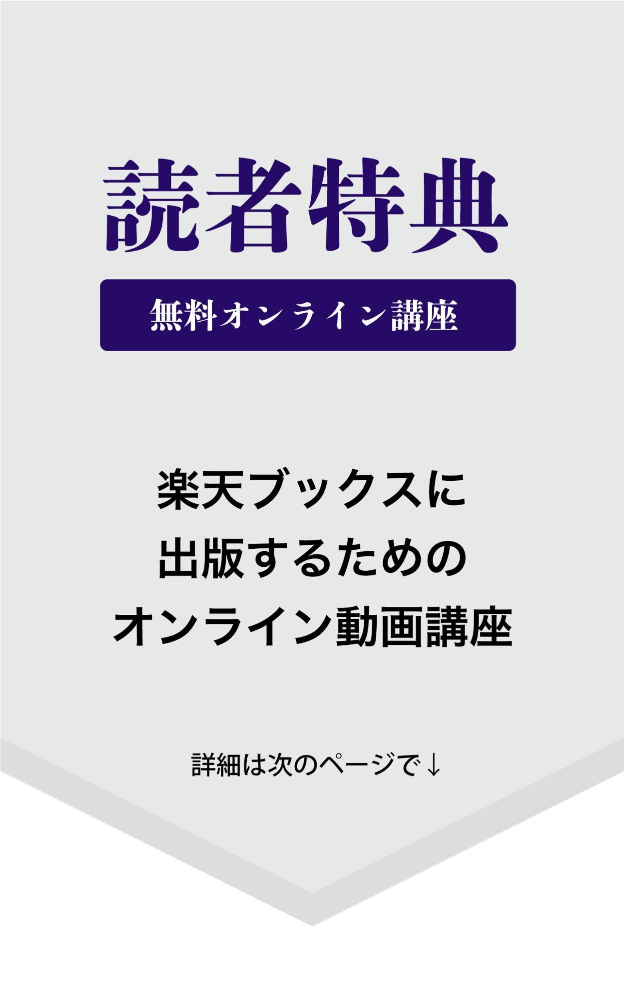

| ストック型コンテンツ: 東京オリンピック後の日本を迎える前に | |
| 杉山トシツグ | |
| UNKNOWN (2018) | |
横書き表示について
本作品は、横書き表示での観覧を推奨いたします。
横書き表示にした際には、表示が一部崩れる恐れがあります。
ご利用になるブラウザまたはビューワにより、表示が異なることがあります。
まえがき
超スピード時代に突入している
いま凄いスピードで時代が変化しています。いや、進化していると言っても良いでしょう。
人工知能やロボティクス、VRや自動運転の車、お金のカタチが変わりつつある電子マネーや仮想通貨などなど。
本書の第1章でも少し触れますが
日本を一歩踏み出すと「今こんなになってるの？！」と驚かされます。
また、スマートフォンの登場によって
生活スタイル、仕事のスタイルがガラリと変わりつつあります。
私自身、この本を出版するのが18冊目。
以前だと、本の原稿を執筆するのは
パソコンの前で画面を見ながら、ひたすらキーボードで打ち込んでいるという印象でした。
もっと前なら、原稿用紙に手書きではないでしょうか。
でも、この原稿はスマートフォンの音声認識機能で書いています。音声認識なので、声を吹き込んでいるといった方が正しいでしょう。
歩きながらだったり、寝転んで作ったり
時には、カフェで珈琲を飲みながら進めていたりします。
執筆スタイルも、随分変わってきたな〜と
自身の作業を通して実感しています。
そもそも、一般人の私が
本を出版できるのですから、凄い時代になってきたものです。
クリエイティブな人が生き残る
「10年後は、機械に仕事が奪われる！」
というフレーズが、よくニュースなどに取り上げられますが
あなたは、どういった人が生き残れるかと思いますか？
私は、１つには『作り出せる人』が生き残ると思っています。
クリエイターと呼ばれる人、またはキュレーターと呼ばれる人達です。
作り出されたもの＝コンテンツは
インターネット上のメディアを通して、スマートフォンで観覧するようになります。
今あなたが読んでいる、この電子書籍のようにです。
他には、ユーチューバーやブロガー
アーティストも、今やテレビだけが主戦場ではありません。
作り出されたコンテンツが、インターネット上に普及し、スマートフォンユーザーの手に届きます。
こうした仕組みが、仕事を生み出し、新しい働き方になっていくのかと思っています。
目次
1・世の中こうなっていく
オリンピック後の日本
もう既に、ご存知かも知れませんが
日本は世界でもトップクラスの少子高齢化が進んでいる国です。
国土交通省の人口推移グラフをみていただくと分かりますが、とてつもない下降を描いています。
グラフを見ていくと
2006年をピークに下がり始めています。
12,774万人（2006年）
↓
12,114万人（2025年）
↓
10,059万人（2050年）
とくに2025年を過ぎた辺りからの勢いは凄まじいですね。
このグラフは、まるでジェットコースターの落下を見ているようです。
今は東京オリンピックの開催を控えているので、なんとか持ちこたえている。
いや誤魔化せている状況なのかもしれませんが、オリンピック後は今までの反動が一気に押し寄せてくると思います。
その理由の１つが「昭和40年不況」です。
昭和40年（1965年）に起こった不況は、かつて開かれた東京オリンピック（1964年10月）の次の年でした。
実は、世界的にもオリンピックの次の年は不況になるパターンが多いのです。
・ソウル（1988年）
・バルセロナ（1992年）
・アトランタ（1996年）
・シドニー（2000年）
・アテネ（2004年）
・北京（2008年）
この中で、不況にならなかったのは
アトランタオリンピックただ１つです。
当時の東京オリンピックは
まだ高度成長期の真っ只中だったので回復が出来たものの
今回は、少子高齢化の影響をまともに受けている中での開催です。
どうなるのか？
まず、免れることは難しいでしょうし、はたして災害の影響を受けている今の日本が回復できるのでしょうか。
AIの発達により、機械に仕事を奪われていく等がニュースなどで取り出たされていますが、私はこちらの方が何倍も気になります。
あと数年で、東京オリンピックの開催。
そして、そのタイミングは間もなくやって来ます。
2021年を見据えて
まともに反動が起こるであろう東京オリンピック後に備えて、今どういった活動をしておくべきかが重要になります。
工場などの単純労働は、人間の代わりに機械がおこなうことになるでしょうし
数字やデータを扱うものは、人工知能に代わっていくと思います。
これからの仕事は、昔の人からすると働いているように見えないでしょう。
例えば
ユーチューバーのゲーム実況なんか、側から見ていると100％遊んでるようにしか見えません。
ブロガーは、何やらインターネットに書き込みしてるし、電子書籍を作っている漫画家や著者なども同じように見えるでしょう。
それが仕事になるわけですね。
外出していても
カフェで、スマホをカチカチ触ってるのが、実は仕事だったり
皆んなで騒ぎながら、スマホの動画を撮っていることが仕事だったりと
パッと見では遊んでるようにしか見えない。
そういった働き方なのかもしれません。
つまり、これからはコンテンツです。
自分自身をプロデュースしたコンテンツを動画で発信し続けるとユーチューバーだし、ブログで発信すると、ブロガー。
電子書籍だったら、電子書籍作家なんでしょうか。
また、これでなきゃという制限もありません。
ブロガーがユーチューバーになったり、逆にユーチューバーがブロガーになったりと主戦場をコロコロと変えるといったことも起こるでしょう。
とくにブロガーから電子書籍作家になるなんて、確実なパターンではないでしょうか。
キャッシュレス化の波
2017年頃から、仮想通貨が大きな話題になりましたが
そもそも仮想通貨以前に大きな枠として、キャッシュレス化を意識しておく必要があるでしょう。
仮想通貨は、その中の１つです。
フィンテックと呼ばれる、金融とテクノロジーの進化によって、世界的にも物凄いスピードでキャッシュレス化が進んでいます。
スウェーデンの首都ストックホルムでは、買物に現金が使えません。
店のドアには、No cash！（現金お断り）の張り紙が貼ってあります。
国民の97％がデビットカードを持っていて、現金の流通は、わずか2％と世界で最もキャッシュレス化が進んでいる場所です。
この波は、スウェーデンだけではありません。
お隣の中国では、スマホ決済が当たり前になっており、主流はQRコードで、ホームレスがお金を受け取る際もQRコードになっているくらいです。
また韓国では、とくにキャッシュカードやデビットカードといったカード決済が進んでおり、なんとキャッシュレス比率は9割近くです。
世界の先進国のキャッシュレス化の平均が
40〜60％と言われてる中
日本は、18.4％と大幅に遅れています。
まさに、現金主義大国ですね。
とは言っても、いずれ追いかけることになるでしょうから、今からキャッシュレス化に備えておく方が良いかもしれません。
お金が、どんどん無形化しています。
売る側も買う側も。
2・だから、無形資産を作ろう
この章では、これからの働き方のヒントとなるビジネス手法を紹介していこうと思います。
パラレルキャリアを構築せよ
ピータードラッカーが推奨していたビジネス手法で「パラレルキャリア」というものがあります。
パラレルキャリアとは
副業の事なのですが、サイドビジネスという意味の副業ではなく、複数業のことをいいます。
つまり「複業」です。
この手法は現代の新しい安定のカタチとも呼ばれており、複数の事業を同時に進めていくことによって、1つがダメになっても他がそれを支えるというモデルです。
例えば、
毎月の収入が20万円あるとします。
その後20万円が1カ所から入ってくる（シングルキャリアの）場合、そこがダメになると収入が0円になります。
しかし、4万円の仕事を5つ同時にやっていれば、その1つがダメになっても後の4カ所（16万円）が支えてくれます。
このように、1つの収入の金額は小さくても、それを増やしておくことで（収入の入り口を増やしておくことで）カバーできるのです。
しかし、これを全て労働で埋めてしまうと、時間に追われ、ただ辛いだけなので
インターネットやネット上のツールを活用して、その仕事にレバレッジを効かすことを考えていきます。
ストック型コンテンツを積み上げろ
先程のレバレッジを効かせるといった話は、第一章でも述べた内容と繋がっていききますが、コンテンツを作るということを考えていきます。
自分が好きなことや得意なことを使ってコンテンツを作り、それを独自メディアで発信していきます。
独自メディアとは、ブログや動画、またはライブ配信や電子書籍といったものです。
それこそ昔の人からすると、遊んでいるようにしか見えない仕事になると思いますが、こういった働き方が今後の主流になるのではないでしょうか。
その中でも、積み上げ式のメディアを選びましょう。
積み上げ式のメディアとは
インターネット上にストックされるメディアのことです。
ホームページやブログ、動画や電子書籍がそれにあたるのですが、ソーシャルメディアなどのタイムライン投稿は少し違います。
ソーシャルメディアの投稿といったタイムライン型のメディアになると、一つ一つの記事や投稿にURLが付きません。
なので、いくら頑張っても、結局は1つのURLになってしまうわけです。
もう少しわかりやすく言うと、スクロールしていかないと記事が見つからないようなものです。
まずは、自分のコンテンツを作り
それを発信していくためのストック型メディアを選びます。
そして、そのメディアでコンテンツを発信していくので「ストック型コンテンツ」となります。
こういったメディアの中でも
今のタイミングでお勧めできるものが電子書籍です。
なぜなら、これから成長期を迎え、ユーザー数もどんどん広がっていくからです。
ブログやYouTubeも良いと思うのですが、市場のタイミングを狙って始めるのであればやはり電子出版でしょう。
私は元々、文章を書くのが苦手だったのですが、この市場のタイミングを知って、電子書籍や電子出版に進む決断をしました。
始めてから2年が経って、やっと慣れてきたといった感じです。
ブロガーやユーチューバーといった専門家的な名前が付くのか？
いずれにしても、次の流れは電子書籍なのは確実だと思っています。
3・所有の時代は終わりへ！
今や必要なものは借りれば良いし、使っていないものがあれば貸せば良い。
そういう時代に入っています。
つまり、「シェアの時代」です。
言い方を変えれば、レンタルなのかもしれませんが、貸す側（提供側）も存在するので今の時代ではシェアという言葉が当てはまります。
そういったシェアが巨大なビジネスとなりつつあります。
そのビジネスの名称は、シェアリングエコノミーサービスと呼びます。
シェアリングエコノミーサービスとは、
空き部屋（空き家）や自家用車などの目に見える物から、DIY代行や料理など目に見えないものを
インターネットを介して、個人の所有物や技術などの使われていない資産を仲介するサービスのことを言います。
MMD研究所（モバイルマーケティングデータ研究所）の15歳～69歳の男女4,412人を対象に2016年10月21日～10月22日の期間で「シェアリングエコノミーサービスに関する調査」の記事によれば（2016.11.8記事掲載）
・シェアリングエコノミーサービスの利用経験は7.3％
・シェアリングエコノミーサービスへの興味度は41.2％
利用したことがあるサービスの上位は「Airbnb、Uber、Laxus」
1位 : Uber 10.8%
2位 : Airbnb 10.0%
3位 : Laxus 4.1&
ちなみに、この後に紹介される
ココナラは、4位で3.7%となっています。
さらに、シェアリングエコノミーサービスを利用したことがあると回答した320人を対象に、利用したことがあるサービスを複数回答で聞いたところ
「Airbnb」と「Uber」が38.1％と最も多く、次いで「Laxus」が26.6％となっています。
全体の41%と半分近くが興味あると示してあるということで、今後のシェアリングエコノミーサービスの浸透に期待されます。
また本書で紹介していくビジネスツール（レンタル）ですが、根本的な考えとしては、このシェアリングエコノミーサービスの内容が基本となります。
シェアの時代だからこそ出てきた、これらの様々なツールは使いこなすことによって、また新たな一段変わるステージへと押し上げてくれると考えられます。
例えば、私の場合は今までアナログ（オフライン）で行ってきたビジネス活動が、オンライン上で完結できるようになりました。
まさに、自分が目指していたものでもありますが
そのために必要な今回のビジネスツールが揃うことで一気に進むことができたのです。
そして、世の中は
このシェアの流れが、物凄い勢いで広がっております。
１つには「シェアカー」
使った分だけの料金を払えばよく、専用のカードが1枚あればインターネット上で簡単に予約ができて、すぐに借りることができます。
使用するのは1枚のカードとアプリのみ。担当者など人と話をする事なども一切なく、アプリのみ自動で行われます。
私は、これによって
車を持たなくて良いという決断ができるので、今では車はシェアカーを利用しています。
ちなみに、使っているのはタイムズシェアカーです。

シェアカーの中でもメジャーなサービスで取扱の駐車場も多いので、使っています。
UBER（ウーバー）は、白タクのサービスなのですが
日本では、まだ1部でしかサービス行われていないこともあり、私自身まだ使ったことがありません。
知り合いで海外に頻繁に行っている方は、いつも利用しているようで外国人である運転手との会話をする必要もなく、アプリを通せば利用もすごく簡単にできるようなのです。
私はまだ使った事がないので、ぜひ利用してみたいですね。
宿泊のシェアサービスもあります。
それが、いま話題のairbnbです。
いま日本は、オリンピック前ということもあり、東京のホテルの宿泊料が値上がりしています。
宿泊の予約も取りづらいということで、宿泊には今話題のサービスであるairbnb（エアービーアンドビー）を利用する人が増えています。
先ほど説明したUberと同様、スマホアプリさえあれば簡単に利用することが可能です。
このように自家用車からタクシー、宿泊先まで、シェアサービスが広がっています。
逆に、所有することは
初期費用や維持費などリスクが高くつきますから
今という時代の流れを取り入れることを考えシェアにシフトチェンジしておくべきではないでしょうか。
またビジネスにおいても「事業のインターネット化」を提案致します。
オフラインからオンライン
またはオンラインからオフラインへの流れを作り、そこでビジネスツールを活用する事で、さらにスムーズな事業展開が出来るようになります。
また本書は、Kindleの特徴である書籍内リンクを利用し、本書専用のウェブサイトと連携させることによって更に詳細な情報が知れる設定となっております。
それでは、次の章からツールを紹介していきます。
この章は、関連する内容として
著者『スマホ時代の個人で始めるビジネスツールの選び方』の第1章を紹介したものです。
もし、ご興味ありましたら
書籍は全て500円以内の価格に設定されていますので、ぜひ手にとってみて下さい。
著書『スマホ時代の個人で始めるビジネスツールの選び方』
https://www.amazon.co.jp/dp/B06XC8SV18
4・ホームページ集客の仕組み
「ホームページを作れば、検索エンジンから人が流れてきて集客に繋がる。」
「今まではブログだけでやってきたので、ホームページさえ持てば集客できるようになる。」
そのように考えている方がいるかもしれませんが
そういった考えでは
今のインターネット活用の時代では、まだスタート地点にも立っていません。
ホームページを持ったからといって、すぐに集客出来るという訳ではないですし
ブログやSNSの外部サービスに全て頼るのではなく
最低限、ご自身のホームページは持っていて当たり前というところからがスタートなのです。
ホームページは、実店舗を持つことなく、あなたのビジネスをインターネット上の店舗やオフィス、またはプラットフォームになり集客に繋げらるツールとなります。
リアル店舗だと、敷金礼金や内装リフォームなど多額の経費がかかりますが、ホームページであれば経費は最小限に押さえられます。
なので、インターネット上に実店舗を出すという意味でもホームページを持っておくことで、やっとスタート地点に立てるのです。
ホームページを持つ＝スタート
しかし、ホームページを持ったとしても、そのホームページがインターネット上で見つからなければビジネスとして成り立ちません。
しかも、インターネット上で認知されるのがとても難しいのです。
まず、検索エンジン１つとっても
今や個人がSNSやブログといったメディアを持つ世の中なので、同じインターネット内では、その多くの個人メディアが存在しているので負けてしまいます。
それに加えて、今の時代は
インターネットであれば、個人が簡単にビジネスを始める事ができます。
ところで、Uberというアプリをご存知ですか？
一般人で車を所有しておれば誰もがタクシーとして稼ぐことができるようになるというスマートフォンアプリです。
料金も通常のタクシーよりも少し安いので、アメリカでは利用者が急増しています。
知り合いの社長から聞いた話なのですが、毎回アメリカに行った時はUberを使うらいんです。
アプリを通して利用するため、運転手にも既に到着先が分かっているので、英語で会話をしなくても済むんですね。
英語が話せなくても平気らしいですよ。
また、このUberの出現により、タクシー会社は大打撃を受け、経営の存続が怪しくなっているのです。
つまりそのアプリをダウンロードしさえすれば、タクシー業者のようなビジネスを個人でも直ぐに始められるということです。
今の世の中では、そんな出来事が突如起こるんですね。
そのような変化の大きな時代ですので
インターネットを活用するにしても無料サービスに頼るだけではなく
自社ホームページを持ち
同時に様々なメディアやツールを活用させ「総合力」で、勝負していくことが大切なのです。
そのためには、ホームページ以外の
・ソーシャルメディア
・マーケティングツール
・インターネット広告
などを使って
これからはインターネットユーザーに向け、総合的なアプローチを心掛けていきましょう。
基本的には、
YouTubeなどの動画やソーシャルメディアなどの連携、メールシステムの導入などを活用させていきます。
またホームページ1つではなく、複数のソーシャルメディアを入口にし
これにマーケティングツールを同時に使い、見込み客を増やす仕組みを作り上げていきます。
それが完成したら、インターネット広告を打ち、さらに大きな入口を増やしていきます。
これらの総合力で、集客から成約するという流れを１つの仕組みとして構築していくのです。
ホームページが教育プログラム
ホームページだけでは難しく、今の時代いきなり売れるということも簡単ではないので、ステップメールというマーケティングツールを使ってビジネスの仕組みを作ります。
つまり、見込み客を教育していくプロセスを作り、成約へと結びつけていくのです。
それには、メールアドレスを登録してもらわなければいけません。
これをオプトインと言います。
オプトインのためには、レポートや専用ページなどの無料でプレゼントするものを作成します。
このような無料プレゼントのことをオプトインオファーといいますが、このオプトインオファーからステップメールでの教育へ繋げ、成約へと流れを作っていきます。
オプトインには、3段階あり
・トップ・オブ・ファネル
・ミドル・オブ・ファネル
・ボトル・オブ・ファネル
その3段階を経て、顧客へとなります。
また、この全体の流れをセールスファネルと言い
あなたのビジネスのセールスファネルを構築していくのです。
トップ・オブ・ファネル は、潜在顧客を見込み客へと繋げる段階で
登録してもらうことで、ステップメールでの教育プログラムに入ってもらいます。
ちなみに、私が使っているのは「アスメル」という、ステップメールシステムです・
登録が無制限、なおかつ低価格なので、ずっと何年も使っています。
ミドル・オブ・ファネル は
オプトインオファーの続きや応用編などの情報を伝え、見込み客を教育していきます。
ボトル・オブ・ファネル では
ステップメールで学んでいただいた見込み客を成約して顧客になってもらうためのアクションを起こします。
ホームページ活用では
トップ・オブ・ファネルで、無料オファーへと繋げる登録ページを作り
ミドル・オブ・ファネルで、非公開ページを作り、ステップメールでリンクを貼ります。
ボトル・オブ・ファネルは
唯一別のランディングページを用意しますが、ホームページの一部をセールスレターページとして作ることも可能です。
ちなみに私の場合は、セールスレターページにしています。
本書で紹介するホームページは、主にトップ・オブ・ファネルの役割になるでしょう。
また、ホームページでは新規ユーザー
つまり、潜在顧客がホームページを発見し、色々と見ていくうちに
メールアドレス等に登録し、見込み客へとなっていただくことが目的です。
オプトインオファーを用意することも大切ですが、問い合わせをしていただくこともリスト化となります。
なので、同時に問い合わせへと向かうホームページを作りあげていきましょう。
この章は、関連する内容として
著者『スマホ時代の見込み客が集まるホームページの作り方』の
第2章を紹介したものです。
もし、ご興味ありましたら
書籍は全て500円以内の価格に設定されていますので、せひ手にとってみて下さい。
著者『スマホ時代の見込み客が集まるホームページの作り方』
https://www.amazon.co.jp/dp/B01N4EQMM5
5・SNSとコンテンツとの相性
ソーシャルメディアを活用するのであれば、やはりコンテンツです。
ビジネスとして考えると
コンテンツをプロモーションするためにソーシャルメディアに投稿していくといった意識でも良いでしょう。
前の章でもお話ししましたが
ブログを書く際、日記ではいけません。あなたが有名人であればいいのですが、一般人の日記を読みたい人などいないのです。
またユーザーも絞り込まれてしまいますし、日記を書いても意味がないので、やめておくべきです。
ビジネスに繋げたいと考えるのであれば尚更です。
ソーシャルメディアならではのコメントやシェアといった拡散機能をビジネスに、上手く活用する上でも日記は避けるようにしましょう。
そして、コンテンツはソーシャルメディアと相性が良いのです。
なぜなら、コンテンツは宣伝や売り込みではなく情報として捉えられるからです。
また読んだ方が、そのコンテンツが自分にとって
・興味のある情報
・役に立つ情報
・友達に紹介したくなる情報
であれば
フォロワーにも伝えたくなるでしょう。
そういった時に、コメントやシェアで拡散される可能性が高くなります。
ソーシャルメディアから外へ
そして、そのコンテンツは
ただ単に情報を伝えて終わりではなく、最終的に見込み客リストになるような流れを作らなければいけません。
また同時に、コンテンツの役割は
そのコンテンツを読んだ方を、ソーシャルメディアから外へ誘い出すために使うということです。
なぜなら、ビジネスに繋げたいからです。
やはり、告知や宣伝をしたいわけですが、その告知や宣伝をソーシャルメディア内ではしたくないわけです。
ソーシャルメディアは、あくまでも「コミュニティの場」であるからです。
ソーシャルメディア内ではなく、リストアップして、そのリストに向けてアプローチしたいわけなので
まず第一段階は、ソーシャルメディアから誘い出すことが必要です。
そして、そこからリスト化する流れを作っていくのです。
出会い → コンテンツ → リスト化
どうすれば、ソーシャルメディアから効率よく誘い出せるか？にかかっています。
それにはやはり、コンテンツだと思います。
そのコンテンツに載せる材料は
ブログ記事であろうと
YouTube（映像）だろうと
PDFファイルであろうと
MP3だろうと何でも構いません。
需要があったり、反応が良かったり
試したり、テストしてみたりと
ユーザーからのフィードバックを元に活用するものを選んでください。
とはいっても
反応がないものを選んでいてはいけないので、何度もアプローチして答えを見つけ出しましょう。
SNSユーザーの属性
ソーシャルメディアのユーザーにあわせた活動が必要です。
FacebookやInstagram、Twitterなどを見ている方のほとんどがスマートフォンを使っています。
なので、まずは使うものが、スマートフォンに対応していなければいけません。
例えば、ホームページの場合
パソコン表示のみのホームページだったりすると、今はほとんどの方がスマホユーザなので、パソコン用表示だと反応が落ちます。
とくにソーシャルメディアは、スマートフォンで観覧する方がほとんどなので（時間帯にもよりますが）
基本的には、スマホ対応のものを選ぶようにするべきです。
コンテンツに限らず
いかにソーシャルメディアといった場から外へ出すかが、ビジネスにとっては大切なわけです。
なので、A4サイズになっているPDFファイルを纏めたようなコンテンツも、今の流れには向いていない場合があります。
そもそも、パソコンユーザーが減っているわけですから
スマホで表示すると読みにくくなるA4サイズのファイルは、あまり読まれないのではと思います。
もちろん、ターゲットの属性やコンテンツのテーマ等にもよりますが
何を使うべきか？などは、しっかりと情報収集をした上で選んでいくようにしましょう。
告知や宣伝をする場所
いまSNS上には、ソーシャルメディア広告といって、簡単に広告が出せるようになっています。
投稿した記事を広告にしたり、改めてダイレクトに広告を出したり、ターゲットを絞り込んだりと様々です。
ソーシャルメディア広告で告知はできるのですが、やはり直接広告を出す事は、あまりオススメできません。
では、何を広告に掲載するのでしょうか？
答えは簡単、それはコンテンツです。
あなたが作ったコンテンツを広告に載せて拡げていきましょう。
広告を使うと、国内外問わず
普段つながることのない人達にもコンテンツを紹介することができます。
あなたのコンテンツを紹介した投稿の反応がよければ、その投稿を広告にしても良いと思います。
また、コンテンツそのものに良い反応があるのなら
それを紹介しているウェブサイトの広告にしてもいいと思います。
ちなみに、フェイスブック広告を出稿するのであれば、フェイスブックページを作っておかなければなりません。
オーガニックリーチ（自然な拡散）だけではなく、ソーシャルメディア広告を使って、更に多くの方達へ情報を広げることも考えてみましょう。
この章は、関連する内容として
著者『スマホ時代のSNSで顧客とつながるコンテンツ活用術』の
第3章を紹介したものです。
もし、ご興味ありましたら
書籍は全て500円以内の価格に設定されていますので、せひ手にとってみて下さい。
著書『スマホ時代のSNSで顧客とつながるコンテンツ活用術』
https://www.amazon.co.jp/dp/B0753LKKBN
6・独自メディアとの組み合わせ
電子出版をしていく上で、とくに意識しなければいけないのが、独自メディアとの組み合わせです。
インターネットとスマートフォンの普及により、ソーシャルメディアを始め、数多くの独自メディアを作ることが可能になりました。
電子書籍の場合は
商業出版と違い、自分でプロデュースする必要があり
単に本を出すだけではなく、独自メディアを組み合わせながら作っていきます。
だからといって、その全てのメディアを使っていては時間がいくらあっても足りません。
メディアを選ぶ必要があります。
その選ぶ基準は
ずばり！『ストック型メディア』です。
ストック型メディアとは、一つ一つ配信にURLがつくことで、インターネット上で見つかりやすくなるものです。
逆に、タイムライン形式の投稿を増やしても、その投稿自体にURLがつかないので余りメリットがありません。

でも、ストック型メディアを増やしておけば、勝手に探し出せてもらえます。
私も以前、ダンス教室を経営していた際に、何年も前に止めたはずのブログから問い合わせが届く経験をしました。
普段使っていないフォームからの問い合わせがきたので
「あれ？！」と思って開くと、スクールへの問い合わせでした。
よくよく考えると、もう何年も前から使っていないフォームからの問い合わせだったのです。
それも一度ではなく、何度もそういった事が起こりました。
電子書籍も、そのストック型メディアの１つです。
その電子書籍と、他のストック型メディアを組み合わせて効果を上げていくことを狙いましょう。
ホームページの連携が入口に
今やホームページの主流となっているワードプレスと組み合わせることを考えましょう。
ホームページ業者に依頼すると更新するたびに料金が発生する場合もあるので、ワードプレスを使って、自身でページ内容を更新できるようにしておきます。
当然、ホームページで電子書籍のお知らせも発信していきますが、逆に電子書籍の巻末でホームページリンクを貼って誘導させることもしていきます。
お互いが相乗効果を上げる仕組みを作るようにします。
ちなみに私が作ったのは、電子書籍専用のホームページです。
そのホームページは、自分が出版している本を紹介していくもので、いわば販売ページのような役割を持っています。
またホームページ内にはブログ機能があり、そこでは宣伝要素のない通常のノウハウや情報を載せた記事を書いています。
▼電子出版のヒント
http://123canvas.net/ebook/archives/category/hinto
全く宣伝要素がない記事になっていますが、その周りには書籍のバナーが貼ってあるので、もし興味がある人は自然に流れるようになっています。
もし興味があれば他のページを見に行くでしょうし、そこでまた別の書籍を購入する可能性だってあります。
また電子書籍専用のホームページを作ったりもしました。
これは、1冊の書籍のため作った専用ホームページで
これについては、第4章で紹介しているので参考にしてみて下さい。
YouTubeへのリンク
動画もストック型メディアの1つです。
電子書籍内には直接、動画へのリンクを貼ることができます。
Wi-Fi環境で読んでいるのであれば、リンクから動画が見れるので
電子書籍から直接YouTubeの方へ誘導することが可能です。
当然、動画を埋め込んだウェブサイトのページへ誘導することも出来ます。
逆に、電子書籍を宣伝する場合も、動画を活用します。
最近では、YouTubeに著者本人が顔を出し、動画の中で直接、本を宣伝をしている人もいます。
ほとんど、YouTuber状態ではありますが、著者のキャラクターがユニークであれば、YouTubeの登録やアクセス数と同時に、本の売れ行きも上がります。
録画された動画ではなく、ライブ配信を使ったリアルタイムでのアプローチも良いと思います。
そういった、本人が動画に顔出して直接話しかけるといった宣伝の仕方も良いのですが、CM型動画として作ったのがコレです。
主に広告を使って本を宣伝する時に使う動画にしています。
仕組みをつくる
電子書籍・ホームページ・動画といったストック型メディア同士を組み合わせて、流れを作るのも良いでしょう。
組み合わせることで相乗効果も生まれ、検索エンジン対策にもなります。
さらにステップメールといったマーケティングツールを組み合わせれば
自動化もしくは半自動化の仕組みも作りやすくなります。
上手く構築できれば、その仕組み自体がインターネット上の資産となります。
電子書籍をフロントエンドとし、最終的に本業のビジネスに結びつける流れを考えましょう。
インターネット広告を入口にして流れを作り、電子書籍の宣伝（もしくは購入）を経由して、ビジネスに繋げていく仕組みを作れます。
考え方によっては
ストックメディアの量=新しい安定とも捉えることもできますね。
この章は、関連する内容として
著者『スマホ時代の電子出版のヒント』の
第2章を紹介したものです。
もし、ご興味ありましたら
書籍は全て500円以内の価格に設定されていますので、ぜひ手にとってみて下さい。
著者『スマホ時代の電子出版のヒント』
7・音声認識で作っていく
この章は出版の原稿について
お話していますが
実際に、そのままブログやSNS投稿に応用できる内容になっております。
スマートフォンの音声認識機能がとても役に立つので、ぜひ参考にしてください。
AppとPC
実際に、記事（原稿）を執筆する際は、スマートフォンのアプリを使って進めていき、その完成した原稿を、まとめるのはパソコンを使います。
まずは、アプリを使って執筆した原稿をメール経由で自分のパソコンに送ります。
私が使うメールは、Gメールですが
Gメールでなくとも、あなたが使いやすいメールを使ってください。
スマートフォンは「カウントメモ」というアプリを使うのですが、アプリから直接メールが送れる機能が搭載されています。
メールは、後半の内容から送るようにすると受信した状態で分かりやすくなります。
原稿の一番終わりの章となる「あとがき」や「おわりに」から送り、最後に「まえがき」や「はじめに」で終わるように送信していきます。
メールの件名には、章のタイトルを入れることで、バッと見て分かるように表示されます。
受信したメールの原稿は、ブログやホームページの記事と出版の原稿とに分けていきます。
私の場合、デザインや配置などを自分でコントロールできるので、ワードプレスを使っているのですが、これはホームページ内記事でも構いません。
ホームページ内記事とは、ホームページの中に実装されたブログのことです。
今アメブロを使ってる人は多いと思うのですが、アメブロは自分の持ち物ではないこと、URLがアメブロであることから、ここでは使いません。
記事投稿を複数のブログに分ける場合は、その1つとしてアメブロは使っています。
理想としては、ワードプレスとホームページの組み合わせにしておくべきだと思っています。
音声認識を使う
執筆の際は、スマートフォンの音声認識機能を使って書くようにしています。
私自身が、パソコンのブラインドタッチ含め、キーワード打ちが苦手なこともあり、この方がスムーズに進むことが分かりました。
実は、パソコンで文字打ちをする時もパソコンに実装されている音声認識機能を使っていて、文字を打ち間違えたり、誤字脱字を見つけた場合は、後で手打ちで編集していきます。
これはスマートフォンも同じようにフリック入力という手打ちで編集していきます。
余談ですが、PCメガネ（パソコン用のメガネ）は必需品ですね。
PCメガネは、パソコンやスマートフォンから発生するブルーライトの防止になります。
私のように原稿を毎日書いている人であったり、ヘビーユーザーであれば、PCメガネは必要でしょう。
たまに、PCメガネを使わずに作業する時もあるのですが、その時に「目が疲れた〜」となるので改めて実感します。
ぜひ、あなたもPCメガネは使ってみてください。
音声認識を使っていると、かなり誤字脱字があります。
原稿作りには勢いやリズムも必要であるし、いちいち直していると原稿の執筆スピードが落ちてしまうので、後で編集するようにします。
また執筆というと、机に座って黙々と描いていくといったイメージがありまふが、私の場合は全く違います。
立ったまま執筆したり、歩きながらだったり、寝転んだまま書いたりもします。
外出先だとカフェやファミレスなどで書いたりするのですが
音声認識機能を使っていて、店内だと声が響くので、外の椅子に座って音声を吹き込んだりしています。
ちなみに、寝転びながら書いていると、そのまま寝てしまうので、あまりオススメできません。笑
一日に５記事を書く
1週間で出版する、この方法を使う場合は、執筆作業を分割させて進めます。
1日に5つの記事を書くことが条件となるので、私の場合は、
昼に2記事、夜3記事
といったペースで書くようにしています。
以下のような1週間のスケジュールです。
・記事作成で4日間
・はじめに・おわりに・イラスト等で1日
・予備原稿の作成で1日
・出版設定で1日
表紙や中に入れるイラストや画像のサイズは共通して
横1600ピクセル×縦2560ピクセルにしています。
以前は、1600ピクセル×2400ピクセルといったサイズでした。
だいたい、この2パターンを使っています。
参考資料はインターネットの検索なので探していき、良い内容のものが見つかったらリーディングリストで保存しておきます。
こういったペース（1週間で出版）を続けていくと、一カ月で４冊の出版になります。
もし執筆ペースに余裕があれば、前倒しにして次の日の記事を作ったり、逆に余裕がなければ、1日４記事で終わらせるようにしています。
余裕がない場合、４記事より少なくなると次の日からのプレッシャーが大きくなるので、少なくとも４記事は完成させるように続けていきます。
いずれにせよ臨機応変に進めていき、自分のやりやすい方法を探すつもりで取り組んでください。
どの記事が完成したかを自分自身でわかるように、それぞれ目印をつけるようにしています。
例えば
執筆中の原稿には、タイトルの章タイトルの初めに矢印をつけ、
完成した原稿には、最初に●をつけます。
矢印をつけることによって、今取り組むべき原稿がどれなのかが分かります。
執筆の際には、どの本の原稿も
これを共通ルールにしています。
音声機能に慣れてしまえば、執筆スピードも上がり、原稿作業が非常にスムーズになります。
個人的意見としては、音声機能なしはありえません。
また原稿をチェックする際は、スマートフォンの読み上げ機能と
実際の自分の目で追いながら、この両方を使ってチェックしていきます。
たまに変な日本語に訳される事がありますが、目でもチェックしているので認識はできます。
この章は、関連する内容として
著者『1週間で電子出版する方法』の
第5章を紹介したものです。
もし、ご興味ありましたら
書籍は全て500円以内の価格に設定されていますので、ぜひ手にとってみて下さい。
著者『1週間で電子出版する方法』
8・独自コンテンツ作成・3つのコツ
この章では、私が実際にやってきた。いや、今もやっている内容を紹介していこうと思います。
実際に、こういった内容を心掛けたり、実践していくと進むようになりました。
大量行動を選ぶ
とにかく最初は「大量の行動」です！
私の場合、その大量行動が電子出版で
質より量といった感じで、とにかくマスト思考を持って挑みました。
「思いつかない」「進まなくなった」
といった壁にぶつかって、途中で心が折れそうになりました。
しかし、自分の場合は「やるしかない！」という所まで追い込まれていたので、選択肢は1つしかありません。
とにかく考えに考え、絞り出していきます。
今までは何かと言い訳をして、途中で諦めていたのを自分自身で反省し、とりあえず続けていきました。
ちなみに、
ブロガーのイケダハヤトさんのツイッターの投稿で毎日1万字を書くことが指標というのを知り、まだまだ自分の甘さを実感しました。
同時に、そういった具体的な数字を知ったことで、火がついたのもあります。
数字という部分では、まず活動する前に計画を立てました。
その計画とは「中期目標」と「短期目標」で、その短期目標も毎日行う事を決め、それをコツコツ繰り返すという所まで落とし込みました。
そうして作業を続けていると、3週間目あたりから慣れていくというか、能力が上がっていく感覚を覚えていきます。
脳の中の筋トレみたいなものですかね。
途中で「もうダメだ〜」と思ったりもするのですが、何とかそれを乗り越えようとしていると、筋力がついたのと同じように脳力がついた感覚です。
例えば、
腕立て伏せが10回しかできない人が、その10回ギリギリを毎日していると、ある時から10回がラクになります。
それと同じような感じで、
アイデアが思いつけるようになったり、今までだと限界を感じたケースも、スムーズに乗り越えられるようになります。
筋力のように、鍛えられてるんですね。
まさに、脳トレです！
ということで、1つ目は大量行動です。
作業時間の確保
その次に、その大量行動をおこなえる環境を整えることが大切だと思ったのです。
私の場合は
1・他の仕事を辞める
2・遊びに行く
この2点をキッパリ辞めました。
「衣食住さえあれば、後はいらん！」
と覚悟を決め、とにかく出版することに集中です。
同時に、どうやったら効率が上がるかも考えながら進めていました。
この時は、仕事に行かなかったので本当にお金が無くて大変でしたが
それはそれで「どうせ、この作業以外はしないんだから」と開き直って、とにかく集中しました。
そのようにして始めた最初の月で
5冊分の出版を達成！
ダンスを仕事にするスキルvol.1
2018/7/6出版
ダンスを仕事にするスキルvol.2
2018/7/17出版
電子出版のヒント
2018/7/22出版
ダンスを仕事にするスキルvol.3
2018/7/27出版
1週間で電子出版する方法
2018/7/31出版
今までは、仕事に行きながら出版活動していると、月に1冊（多くても2冊）が限界だったので、5倍の結果です。
働いて稼いだとしても、その稼いだお金はいずれ無くなります。
しかし、電子書籍の場合は
無形資産になるので、それを積み重ねていくことにより、いずれ働かなくても利益を生み出す可能性が出てきます。
だったら、集中しておこなわないと損じゃないかと改めて思いました。
それと同時に、脳力が上がっていくことも実感できていたので
これで集中できる環境さえ確保すれば、最低でも月に5冊は作れる！という自信も付いていました。
まずは、最初の1ヶ月。
これが凄く大切なんですね。
モチベーションが上がる材料
これを続けていると、いずれ壁にぶち当たったりしてメンタル面がやられるんですけど、そういった時にこそモチベーションとなる材料を使います。
例えば、自己啓発本です。
読んでいて、やる気になった本を
見える場所に置いておき、いつでも読めるようにしておきます。
まるまる1冊というよりも、その本のある1ページがモチベーションを上げる材料だったりします。
人によっては、それが本ではなく
映像だったり、また誰か知り合いや有名人のSNSかもしれません。
また、偉人の格言だったり、自分がメモっておいた紙だったりします。
よく受験生が、東大合格！という言葉を書いて壁に貼って黙々と受験勉強をしていたりしますが、あれと同じ効果だと思います。
この段階になると、いかに継続できるか。そして、何が継続させる材料となっているのか？を知っておくことが大切です。
毎回その1日で、スイッチを入れ直すことが大切だと思っていて
「今日はここまで絶対進めるぞ！」と毎日、自分に誓いながら過ごしています。
もちろん達成できない時もありますが
そこは素直に反省して、次からまたチャレンジしていこうと気持ちを入れ替えています。
目標を達成するには、まずは大量行動であり、それをやり切ることです。
そのために、計画をしたり、環境整えたり、本を読んだりするのです。
どれだけ最初に大量行動が取れて、それをペースに出来るまで積み重ねていけるのか？が大切だと思って活動を続けています。
あとがき
本書では、東京オリンピック後の働き方と
ストック型コンテンツの
2つを中心にお話ししていきました。
「コンテンツを作らなければいけない事は分かった。でも環境を整えたり時間を作る余裕はないんだよね」
そういった方もいると思います。
だからといって、諦めて何もしないのでは勿体ないですから
少しでもいいので、コンテンツを作ってみていただけたらと思います。
仮に、それはコンテンツのみで収入を得るといった手法だけではありません。
そのコンテンツを作ることによって、今おこなっている仕事にもプラスとなる可能性があります。
高額なホームページは除いて
これらのメディアは特に高いお金がかかるわけでなく、ほとんどが無料であることからも作っておいて損はないと思います。
昔は、小冊子というものを作ってビジネスの集客に応用していたという時代がありました。
しかし、これが今なら電子書籍でおこなえるのです。
小冊子は、作る為に纏まった金額が必要ですが、電子書籍は無料で出せて、尚且つ印税やページビューにより、収入が入ってくる可能性があります。
ぜひ、最初の一歩ならぬ
・最初の1冊
・最初の1動画
・最初の1ブログ記事
といったものを始めてみて下さい。
それでは
最後まで、読んでいただきありがとうございました。
杉山トシツグ

読者プレゼント
楽天ブックスへの出版を考えている方へ！
a mazon kindleへの出版方法は分かるが、楽天ブックスへの出版となると、ちょっと分からない
という方が多いのではないでしょうか？
Kindleはデータ変換を自動化してくれるので出版もしやすいのですが
楽天ブックスは、自動変換されないので、データを作り上げた状態で提出しないといけません。
実際に、ネットで調べても分かりにくかったりします。
私も何度か審査が通らず
データを作り直して、3回目で、ようやく出版にたどり着いたという経験があります。
Kindleよりも出版するのが難しいというのが、その時の感想です。
なので、以前の私と同じように苦戦している方に向けて
楽天ブックスで出版する方法を、分かりやすく解説した動画を作りました。
これを見れば、今まで難しいと思っていた楽天ブックスへの出版が
簡単におこなえるようになります。
ただし、この特典の期間（無料配布）には限りがあります。
というのも元々は、有料サービスで使うために作成した動画なので
いつ無料配布が終了になるかは分かりません。
なので、興味のある方は
ぜひ早めに手に入れて下さい。
読者特典は▼コチラから
http://smartphoneconsultant.com/free_kobo
著書一覧
ストック型コンテンツ
https://www.amazon.co.jp/dp/B07G82ZSZV
スマホ時代の見込み客が集まるホームページの作り方
https://www.amazon.co.jp/dp/B01N4EQMM5
スマホ時代の個人で始めるビジネスツールの選び方
https://www.amazon.co.jp/dp/B06XC8SV18
スマホ時代のSNSで顧客とつながるコンテンツ活用術
https://www.amazon.co.jp/dp/B0753LKKBN
スマホ時代の収入の入り口を増やす電子書籍のヒント
https://www.amazon.co.jp/dp/B07FS6DFTR
スマホで稼ぐ・5つのレッスン
https://www.amazon.co.jp/dp/B01M28EXSS
はじめての教室ビジネス
https://www.amazon.co.jp/dp/B07G6V21MX
教室ビジネスのメモ帳A
https://www.amazon.co.jp/dp/B07GN9KJKR
教室ビジネスのメモ帳B
https://www.amazon.co.jp/dp/B07H4BLKHL
1週間で電子出版する方法
https://www.amazon.co.jp/dp/B07G2XVJFV
わたしはダンスで食っていく
https://www.amazon.co.jp/dp/B01J413NQ8
絶対に成功させる！フラッシュモブの始め方
https://www.amazon.co.jp/dp/B01MQ5GL3L
企業はダンスを取り入れよ！
https://www.amazon.co.jp/dp/B01MZ7AK8A
未来のダンスメソッド
https://www.amazon.co.jp/dp/B01M8M17LG
ダンス独学法
https://www.amazon.co.jp/dp/B06XXQ2FG6
TKOコンセプトブックvol.1
https://www.amazon.co.jp/dp/B07CWSW678
TKOコンセプトブックvol.2
https://www.amazon.co.jp/dp/B07DDGTTMN
ダンスを仕事にするスキル 第1弾
https://www.amazon.co.jp/dp/B07F9K9T1V
ダンスを仕事にするスキル 第2弾
https://www.amazon.co.jp/dp/B07FN6BDTB
ダンスを仕事にするスキル 第3弾
https://www.amazon.co.jp/dp/B07FY4JTNB
ダンスを仕事にするスキル 第4弾
https://www.amazon.co.jp/dp/B07G9MCQ1T
スマホ時代シリーズ2冊合本版
コンテンツ活用術&ビジネスツールの選び方
https://www.amazon.co.jp/dp/B07GRCFTT2
スマホ時代シリーズ2冊合本版
電子出版のヒント&ホームページの作り方
https://www.amazon.co.jp/dp/B07GVDJ89X
著者プロフィール
スマホコンサル杉山（本名 : 杉山トシツグ）
JSMA 一般社団法人
日本スマートフォンマーケティング協会
認定コンサルタント
1999年より、アドビ公認のマック・トレーニングスクールでDTP（チラシや広告を制作するスキル）、ウェブサイト制作を学ぶ。
その後さらに、マインドマップの講座への参加・ Photoreading（速読）を学ぶ。
また大阪にある日本メンタルヘルス協会で心理学を学ぶなど、今後必要とされる知識の学びと活動を拡げていく。
約20年間のダンススタジオ経営を経験。
2015年1月には、JSMA 一般社団法人 日本スマートフォンマーケティング協会にて、認定のコンサルタントとなる。
現在、地元となる岡山県を中心に活動しており、エステサロン、お寿司屋、理容室、ダンス教室などジャンルを問わずスマートフォン対策を含めたサポートをしている。今後はインターネットを使っての全国展開へと活動を拡げていく予定である。
メディア紹介
■スマホコンサル電子書籍・専用ページ
http://smartphoneconsultant.com/book_support
■スマホコンサル杉山ホームページ
http://smartphoneconsultant.com
■杉山トシツグ公式ワードプレス
■スマホコンサル杉山のフェイスブックページ
https://www.facebook.com/smartphoneconsultant/
■スマホコンサル杉山のツイッター
https://twitter.com/SmahoSUGiYAMA
ストック型コンテンツ（Kindle Edition）
2017年8月 第1刷発行
著者 杉山トシツグ
発行人 杉山トシツグ
・ 本書は著作権法上の保護を受けています。本書の一部または全部について、著者である杉山トシツグからの許諾を得ずに、いかなる方法においても無断で複写、複製することは禁じられています。